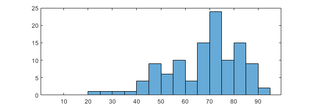
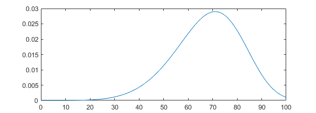
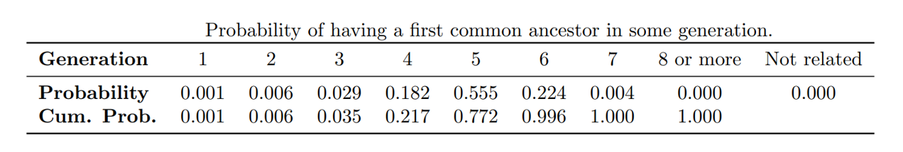

Family Tree Simulation
Have you ever wondered whether some random person you come across might be related to you? Personally, I don't know most of my second cousins, let alone third cousins or relatives whom I share an ancestor with some more generations back in time. Yet, there must be many people I am related to, considering the number of ancestors a person has exponentially increases as we go back in time. Together, these ancestors probably have a lot of descendants nowadays, who are all related to each other. What is the probability someone you meet on the street shares an ancestor with you?

Previously, I tried solving this problem analytically, by constructing a complex model. Such a model depends on many parameters, for example the number of children per couple and child mortality rate. Other features are harder to incorporate using a simple parameter, such as the choice of a partner and the age of parents when their child is born.
When I learned about simulation, I took another approach to answer the question. Discrete Event Simulation seems to be a suitable technique for simulating a family tree, or a set of family trees rather. Different events are births, marriages, deaths. A realistic simulation of just these three events provides us with a lot of information about the population. We can answer questions such as 'What is the average age of the population?', 'What percentage of people have a chance to get to know all of their grandparents?' and our initial question about the probability of being related to a random other person.
In Discrete Event Simulation, the state of the system only changes when an event takes place. Indeed, to us it is only relevant which people are alive, and how they are related to each other. Between any two events, this does not change. Their ages are also relevant to us, but even though age continuously changes between two events, we do not need to regard it as a component of the state, since changing age itself does not trigger any new events. To see this, let's have a look at how Discrete Event Simulation works.
The simulation is performed chronologically, starting at, say, day 1 of the year 1700. Besides the state of the system, we keep track of a list of future events. Initially, we do not know which events will happen during the simulation, nor at what time they will happen. However, we provide the system with an initial list of events, which will be performed at the time for which they are scheduled. As an event happens, a piece of code is performed to change the state of the system and to schedule new future events. For example, when a birth is simulated, a new person should be added to the list of all people, and to the list of children of its parents. Furthermore, the death event of this newly born person is already added to the list of future events.
Scheduling a marriage event is a bit more tricky, since this requires another person. Just like in real life, this person may have not yet been born. So instead, we schedule a provisional marriage; a date in the future on which the person might get married. When this event if performed, the person is added to a list of marriageable persons. Next, the person looks for a spouse among the list of marriageable persons. With some probability, depending on the age difference between potential spouses, a marriage takes place. If no marriage takes place, the person may be chosen as a spouse by someone how reaches marriageable age at a later moment in time.
The simulation depends on some stochastic processes, which determine the timing of the events. As an example, let us have a look at the age at death. The histogram below shows the age at death of all of my second, third and fourth great-grandparents.
The Weibull distribution seems to be a suitable distribution to capture this data. By performing Maximum Likelihood Estimation on the data sample, we obtain the scale and shape parameters and obtain the Probability Density Function plotted below, which resembles the histogram above. Now we have a way to simulate the age at death of a person in our simulation, by drawing a random variate from this distribution. The same can be done for other random variables, which are the age of men and women to become marriageable, the time between marriage and the birth of the first child, the time between the birth of two children of the same parents and the age of women when they give birth to their last child.
One more feature I added to the simulation is child mortality. Child mortality is not included in the Weibull distribution, because it is based on a sample of people which are all ancestors of mine. This means they were old enough to get children. Instead, I looked at the families of my second and third great-grandparents, and found that 28% of their children died before turning 18. Since it is irrelevant for answering our research question at what age children typically die, this can be simulated by a simple Bernoulli experiment.
Even though the simulation I described is still very much a simplification of reality, we can now run it to get some results. We run the simulation for 300 years, and start with an initial population of 50 people. These people all are born on day 1 of the simulation and we will assume they are not related to each other. Using the distributions as estimated by my data sample, we get a growing population. The number of people alive after 100 years is approximately 300, and this increases to 1700 and 9100 for the two next centuries. We can now analyse those 9100 persons, and calculate the probability of being related, i.e. having a common ancestor within a certain number of generations. The table below shows the results for this particular simulation. It turns out that all people alive after 300 years are related to each other, but for some pairs of people, we need to go back 7 generations to find their first common ancestor.
There are many possible ways to extend this simulation. The populations seems to grow too quickly, compared to the population growth in the Netherlands for the last 3 centuries. So we could add features to make the simulation more realistic, for example a probability of having no children and the possibility of migration. Furthermore, the parameters of the simulation could be time dependent. Indeed, child mortality has decreased, age of marriage and death have increased, and so on.
It would also be interesting to add a component simulating the place of residence. We could use it to affect the choice of a spouse, such that people generally marry someone who lives in the same region. Then, the probability of being related to a random other person would be higher for persons from close by and lower for persons from further away. This would also make it possible to graphically show the simulation. As the simulated time goes by, we could see people be born, marry, move and die.
For now, whenever I see someone on the street with a familiar face, I will just keep wondering. Could we be distant cousins, walking past each other unknowingly?